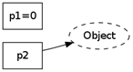
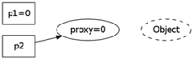
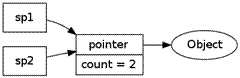
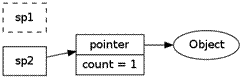
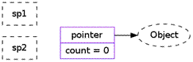

by: 陈硕 (giantchen_AT_gmail) https://blog.csdn.net/Solstice/article/details/5238671
摘要
编写线程安全的类不是难事，用同步原语保护内部状态即可。但是对象的生与死不能由对象自身拥有的互斥器来保护。如何保证即将析构对象 x 的时候，不会有另一个线程正在调用 x 的成员函数？或者说，如何保证在执行 x 的成员函数期间，对象 x 不会在另一个线程被析构？如何避免这种竞态条件是 C++ 多线程编程面临的基本问题，可以借助 boost 的 shared_ptr 和 weak_ptr 完美解决。这也是实现线程安全的 Observer 模式的必备技术。
本文源自我在 2009 年 12 月上海 C++ 技术大会的一场演讲《当析构函数遇到多线程》，内容略有增删。原始 PPT 可从 http://download.csdn.net/source/1982430 下载，或者在 http://www.docin.com/p-41918023.html 直接观看。
本文读者应具有 C++ 多线程编程经验，熟悉互斥器、竞态条件等概念，了解智能指针，知道 Observer 设计模式。
多线程下的对象生命期管理
与其他面向对象语言不同，C++ 要求程序员自己管理对象的生命期，这在多线程环境下显得尤为困难。当一个对象能被多个线程同时看到，那么对象的销毁时机就会变得模糊不清，可能出现多种竞态条件：
- 在即将析构一个对象时，从何而知是否有另外的线程正在执行该对象的成员函数？
- 如何保证在执行成员函数期间，对象不会在另一个线程被析构？
- 在调用某个对象的成员函数之前，如何得知这个对象还活着？它的析构函数会不会刚执行到一半？
解决这些 race condition 是 C++ 多线程编程面临的基本问题。本文试图以 shared_ptr 一劳永逸地解决这些问题，减轻 C++ 多线程编程的精神负担。
线程安全的定义
依据《Java 并发编程实践》/《Java Concurrency in Practice》一书，一个线程安全的 class 应当满足三个条件：
- 从多个线程访问时，其表现出正确的行为
- 无论操作系统如何调度这些线程，无论这些线程的执行顺序如何交织
- 调用端代码无需额外的同步或其他协调动作
依据这个定义，C++ 标准库里的大多数类都不是线程安全的，无论 std::string 还是 std::vector 或 std::map，因为这些类通常需要在外部加锁。
Mutex 与 MutexLock 3
为了便于后文讨论，先约定两个工具类。我相信每个写C++ 多线程程序的人都实现过或使用过类似功能的类，代码从略。
Mutex封装临界区（Criticalsecion），这是一个简单的资源类，用RAII手法封装互斥器的创建与销毁。临界区在Windows上是CRITICAL_SECTION，是可重入的；在Linux下是pthread_mutex_t，默认是不可重入的。Mutex一般是别的class的数据成员。
MutexLock 封装临界区的进入和退出，即加锁和解锁。MutexLock 一般是个栈上对象，它的作用域刚好等于临界区域。它的构造函数原型如下。1
explicit MutexLock::MutexLock(Mutex& m);
这两个类都不允许拷贝构造和赋值。
一个线程安全的 Counter 示例
编写单个的线程安全的 class 不算太难，只需用同步原语保护其内部状态。例如下面这个简单的计数器类 Counter：1
2
3
4
5
6
7
8
9
10
11
12
13
14
15
16
17
18
19
20
21
22
23
24
25
26class Counter : boost::noncopyable
{
// copy-ctor and assignment should be private by default for a class.
public:
Counter(): value_(0) {}
int64_t value() const;
int64_t increase();
int64_t decrease();
private:
int64_t value_;
mutable Mutex mutex_;
}
int64_t Counter::value() const
{
MutexLock lock(mutex_);
return value_;
}
int64_t Counter::increase()
{
MutexLock lock(mutex_);
int64_t ret = value_++;
return ret;
}
// In a real world, atomic operations are perferred.
// 当然在实际项目中，这个 class 用原子操作更合理，这里用锁仅仅为了举例。
这个 class 很直白，一看就明白，也容易验证它是线程安全的。注意到它的 mutex 成员是 mutable 的，意味着 const 成员函数如 Counter::value() 也能直接使用 non-const 的 mutex。
尽管这个 Counter 本身毫无疑问是线程安全的，但如果 Counter 是动态创建的并透过指针来访问，前面提到的对象销毁的 race condition 仍然存在。
对象的创建很简单
对象构造要做到线程安全，惟一的要求是在构造期间不要泄露 this 指针，即
- 不要在构造函数中注册任何回调
- 也不要在构造函数中把 this 传给跨线程的对象
- 即便在构造函数的最后一行也不行
之所以这样规定，是因为在构造函数执行期间对象还没有完成初始化，如果 this 被泄露 (escape) 给了其他对象（其自身创建的子对象除外），那么别的线程有可能访问这个半成品对象，这会造成难以预料的后果。1
2
3
4
5
6
7
8
9// 不要这么做 Don't do this.
class Foo : public Observer
{
public:
Foo(Observable* s) {
s->register(this); // 错误
}
virtual void update();
};
1 | // 要这么做 Do this. |
这也说明，二段式构造——即构造函数+initialize()——有时会是好办法，这虽然不符合 C++ 教条，但是多线程下别无选择。另外，既然允许二段式构造，那么构造函数不必主动抛异常，调用端靠 initialize() 的返回值来判断对象是否构造成功，这能简化错误处理。
即使构造函数的最后一行也不要泄露 this，因为 Foo 有可能是个基类，基类先于派生类构造，执行完 Foo::Foo() 的最后一行代码会继续执行派生类的构造函数，这时 most-derived class 的对象还处于构造中，仍然不安全。
相对来说，对象的构造做到线程安全还是比较容易的，毕竟曝光少，回头率为 0。而析构的线程安全就不那么简单，这也是本文关注的焦点。
销毁太难
对象析构，这在单线程里不会成为问题，最多需要注意避免空悬指针（和野指针）。而在多线程程序中，存在了太多的竞态条件。对一般成员函数而言，做到线程安全的办法是让它们顺次执行，而不要并发执行，也就是让每个函数的临界区不重叠。这是显而易见的，不过有一个隐含条件或许不是每个人都能立刻想到：函数用来保护临界区的互斥器本身必须是有效的。而析构函数破坏了这一假设，它会把互斥器销毁掉。悲剧啊！
Mutex 不是办法
Mutex 只能保证函数一个接一个地执行，考虑下面的代码，它试图用互斥锁来保护析构函数：
1 | Foo::~Foo() |
有 A 和 B 两个线程，线程 A 即将销毁对象 x，而线程 B 正准备调用 x->update()。尽管线程 A 在销毁对象之后把指针置为了 NULL，尽管线程 B 在调用 x 的成员函数之前检查了指针 x 的值，还是无法避免一种 race condition：
- 线程 A 执行到了析构函数的 (1) 处，已经持有了互斥锁，即将继续往下执行
- 线程 B 通过了 if (x) 检测，阻塞在 (2) 处
接下来会发生什么，只有天晓得。因为析构函数会把 mutex_ 销毁，那么 (2) 处有可能永远阻塞下去，有可能进入“临界区”然后 core dump，或者发生其他更糟糕的情况。
这个例子至少说明 delete 对象之后把指针置为 NULL 根本没用，如果一个程序要靠这个来防止二次释放，说明代码逻辑出了问题。
作为数据成员的 Mutex
前面的例子说明，作为 class 数据成员的 Mutex 只能用于同步本 class 的其他数据成员的读和写，它不能保护安全地析构。因为成员 mutex 的生命期最多与对象一样长，而析构动作可说是发生在对象身故之后（或者身亡之时）。另外，对于基类对象，那么调用到基类析构函数的时候，派生类对象的那部分已经析构了，那么基类对象拥有的 mutex 不能保护整个析构过程。再说，析构过程本来也不需要保护，因为只有别的线程都访问不到这个对象时，析构才是安全的，否则会有第 1 节谈到的竞态条件发生。
另外如果要同时读写本 class 的两个对象，有潜在的死锁可能，见 PPT 第 12 页的 swap() 和 operator=()。
线程安全的 Observer 有多难？
一个动态创建的对象是否还活着，光看指针（引用也一样）是看不出来的。指针就是指向了一块内存，这块内存上的对象如果已经销毁，那么就根本不能访问 [CCS:99]（就像 free 之后的地址不能访问一样），既然不能访问又如何知道对象的状态呢？换句话说，判断一个指针是不是野指针没有高效的办法。（万一原址又创建了一个新的对象呢？再万一这个新的对象的类型异于老的对象呢？）
在面向对象程序设计中，对象的关系主要有三种：composition, aggregation 和 association。Composition（组合/复合）关系在多线程里不会遇到什么麻烦，因为对象 x 的生命期由其惟一的拥有者 owner 控制，owner 析构的时候会把 x 也析构掉。从形式上看，x 是 owner 的直接数据成员，或者 scoped_ptr 成员，或者 owner 持有的容器的元素。
后两种关系在 C++ 里比较难办，处理不好就会造成内存泄漏或重复释放。Association（关联/联系）是一种很宽泛的关系，它表示一个对象 a 用到了另一个对象 b，调用了后者的成员函数。从代码形式上看，a 持有 b 的指针（或引用），但是 b 的生命期不由 a 单独控制。Aggregation（聚合）关系从形式上看与 association 相同，除了 a 和 b 有逻辑上的整体与部分关系。如果 b 是动态创建的并在整个程序结束前有可能被释放，那么就会出现第 1 节谈到的竞态条件。
那么似乎一个简单的解决办法是：只创建不销毁。程序使用一个对象池来暂存用过的对象，下次申请新对象时，如果对象池里有存货，就重复利用现有的对象，否则就新建一个。对象用完了，不是直接释放掉，而是放回池子里。这个办法当然有其自身的很多缺点，但至少能避免访问失效对象的情况发生。
这种山寨办法的问题有：
- 对象池的线程安全，如何安全地完整地把对象放回池子里，不会出现“部分放回”的竞态？（线程 A 认为对象 x 已经放回了，线程 B 认为对象 x 还活着）
- thread contention，这个集中化的对象池会不会把多线程并发的操作串行化？
- 如果共享对象的类型不止一种，那么是重复实现对象池还是使用类模板？
- 会不会造成内存泄露与分片？因为对象池占用的内存只增不减，而且多个对象池不能共享内存（想想为何）。
回到正题上来，如果对象 x 注册了任何非静态成员函数回调，那么必然在某处持有了指向 x 的指针，这就暴露在了 race condition 之下。
一个典型的场景是 Observer 模式。1
2
3
4
5
6
7
8
9
10
11
12
13
14
15
16
17
18
19
20
21class Observer
{
public:
virtual ~Observer() { }
virtual void update() = 0;
};
class Observable
{
public:
void register(Observer* x);
void unregister(Observer* x);
void notifyObservers() {
foreach Observer* x { // 这行是伪代码
x->update(); // (3)
}
}
// ...
}
当 Observable 通知每一个 Observer 时 (3)，它从何得知 Observer 对象 x 还活着？
要不在 Observer 的析构函数里解注册 (unregister)？恐难奏效。1
2
3
4
5
6
7
8
9
10
11
12
13
14
15
16struct Observer
{
virtual ~Observer() { }
virtual void update() = 0;
void observe(Observable* s) {
s->register(this);
subject_ = s;
}
virtual ~Observer() {
// (4)
subject_->unregister(this);
}
Observable* subject_;
};
我们试着让 Observer 的析构函数去 unregister(this)，这里有两个 race conditions。其一：(4) 处如何得知 subject 还活着？其二：就算 subject 指向某个永久存在的对象，那么还是险象环生：
- 线程 A 执行到 (4) 处，还没有来得及 unregister 本对象
- 线程 B 执行到 (3) 处，x 正好指向是 (4) 处正在析构的对象
那么悲剧又发生了，既然 x 所指的 Observer 对象正在析构，调用它的任何非静态成员函数都是不安全的，何况是虚函数（C++ 标准对在构造函数和析构函数中调用虚函数的行为有明确的规定，但是没有考虑并发调用的情况）。更糟糕的是，Observer 是个基类，执行到 (4) 处时，派生类对象已经析构掉了，这时候整个对象处于将死未死的状态，core dump 恐怕是最幸运的结果。
这些 race condition 似乎可以通过加锁来解决，但在哪儿加锁，谁持有这些互斥锁，又似乎不是那么显而易见的。要是有什么活着的对象能帮帮我们就好了，它提供一个 isAlive() 之类的程序函数，告诉我们那个对象还在不在。可惜指针和引用都不是对象，它们是内建类型。
一些启发
指向对象的原始指针 (raw pointer) 是坏的，尤其当暴露给别的线程时。Observable 应当保存的不是原始的 Observer ，而是别的什么东西，能分别 Observer 对象是否存活。类似地，如果 Observer 要在析构函数里解注册（这虽然不能解决前面提到的 race condition，但是在析构函数里打扫战场还是应该的），那么 subject_ 的类型也不能是原始的 Observable 。
有经验的 C++ 程序员或许会想到用智能指针，没错，这是正道，但也没那么简单，有些关窍需要注意。这两处直接使用 shared_ptr 是不行的，会形成循环引用，直接造成资源泄漏。别着急，后文会一一讲到。
原始指针有何不妥？
有两个指针 p1 和 p2，指向堆上的同一个对象 Object，p1 和 p2 位于不同的线程中（左图）。假设线程 A 透过 p1 指针将对象销毁了（尽管把 p1 置为了 NULL），那么 p2 就成了空悬指针（右图）。这是一种典型的 C/C++ 内存错误。

要想安全地销毁对象，最好让在别人（线程）都看不到的情况下，偷偷地做。
一个“解决办法”
一个解决空悬指针的办法是，引入一层间接性，让 p1 和 p2 所指的对象永久有效。比如下图的 proxy 对象，这个对象，持有一个指向 Object 的指针。（从 C 语言的角度，p1 和 p2 都是二级指针。）

当销毁 Object 之后，proxy 对象继续存在，其值变为 0。而 p2 也没有变成空悬指针，它可以通过查看 proxy 的内容来判断 Object 是否还活着。要线程安全地释放 Object 也不是那么容易，race condition 依旧存在。比如 p2 看第一眼的时候 proxy 不是零，正准备去调用 Object 的成员函数，期间对象已经被 p1 给销毁了。
问题在于，何时释放 proxy 指针呢？
一个更好的解决办法
为了安全地释放 proxy，我们可以引入引用计数，再把 p1 和 p2 都从指针变成对象 sp1 和 sp2。proxy 现在有两个成员，指针和计数器。
- 一开始，有两个引用，计数值为 2，
 - sp1 析构了，引用计数的值减为 1，
 - sp2 也析构了，引用计数的值为 0，可以安全地销毁 proxy 和 Object 了。

慢着！这不就是引用计数型智能指针吗？
一个万能的解决方案
引入另外一层间接性，another layer of indirection，用对象来管理共享资源（如果把 Object 看作资源的话），亦即 handle/body 手法 (idiom)。当然，编写线程安全、高效的引用计数 handle 的难度非凡，作为一名谦卑的程序员，用现成的库就行。
万幸，C++ 的 tr1 标准库里提供了一对神兵利器，可助我们完美解决这个头疼的问题。
神器 shared_ptr/weak_ptr
shared_ptr 是引用计数型智能指针，在 boost 和 std::tr1 里都有提供，现代主流的 C++ 编译器都能很好地支持。shared_ptr
shared_ptr 的基本用法和语意请参考手册或教程，本文从略，这里谈几个关键点。
- shared_ptr 控制对象的生命期。shared_ptr 是强引用（想象成用铁丝绑住堆上的对象），只要有一个指向 x 对象的 shared_ptr 存在，该 x 对象就不会析构。当指向对象 x 的最后一个 shared_ptr 析构或 reset 的时候，x 保证会被销毁。
- weak_ptr 不控制对象的生命期，但是它知道对象是否还活着（想象成用棉线轻轻拴住堆上的对象）。如果对象还活着，那么它可以提升 (promote) 为有效的 shared_ptr；如果对象已经死了，提升会失败，返回一个空的 shared_ptr。“提升”行为是线程安全的。
- shared_ptr/weak_ptr 的“计数”在主流平台上是原子操作，没有用锁，性能不俗。
- shared_ptr/weak_ptr 的线程安全级别与 string 等 STL 容器一样，后面还会讲。
插曲：系统地避免各种指针错误
我同意孟岩说的“大部分用 C 写的上规模的软件都存在一些内存方面的错误，需要花费大量的精力和时间把产品稳定下来。”内存方面的问题在 C++ 里很容易解决，我第一次也是最后一次见到别人的代码里有内存泄漏是在 2004 年实习那会儿，自己写的C++ 程序从来没有出现过内存方面的问题。
C++ 里可能出现的内存问题大致有这么几个方面：
- 缓冲区溢出
- 空悬指针/野指针
- 重复释放
- 内存泄漏
- 不配对的 new[]/delete
- 内存碎片
正确使用智能指针能很轻易地解决前面 5 个问题，解决第 6 个问题需要别的思路，我会另文探讨。
- 缓冲区溢出 ⇒ 用 vector/string 或自己编写 Buffer 类来管理缓冲区，自动记住用缓冲区的长度，并通过成员函数而不是裸指针来修改缓冲区。
- 空悬指针/野指针 ⇒ 用 shared_ptr/weak_ptr，这正是本文的主题
- 重复释放 ⇒ 用 scoped_ptr，只在对象析构的时候释放一次
- 内存泄漏 ⇒ 用 scoped_ptr，对象析构的时候自动释放内存
- 不配对的 new[]/delete ⇒ 把 new[] 统统替换为 vector/scoped_array
正确使用上面提到的这几种智能指针并不难，其难度大概比学习使用 vector/list 这些标准库组件还要小，与 string 差不多，只要花一周的时间去适应它，就能信手拈来。我认为，在现代的 C++ 程序中一般不会出现 delete 语句，资源（包括复杂对象本身）都是通过对象（智能指针或容器）来管理的，不需要程序员还为此操心。
需要注意一点：scoped_ptr/shared_ptr/weak_ptr 都是值语意，要么是栈上对象，或是其他对象的直接数据成员，或是标准库容器里的元素。几乎不会有下面这种用法：
1 | shared_ptr<Foo>* pFoo = new shared_ptr<Foo>(new Foo); // WRONG semantic |
还要注意，如果这几种智能指针是对象 x 的数据成员，而它的模板参数 T 是个 incomplete 类型，那么 x 的析构函数不能是默认的或内联的，必须在 .cpp 文件里边显式定义，否则会有编译错或运行错。（原因请见 boost::checked_delete）
应用到 Observer 上
既然透过 weak_ptr 能探查对象的生死，那么 Observer 模式的竞态条件就很容易解决，只要让 Observable 保存 weak_ptr
1 | class Observable // not 100% thread safe! |
就这么简单。前文代码 (3) 处的竞态条件已经弥补了。
解决了吗？
把 Observer* 替换为 weak_ptr
不灵活，强制要求 Observer 必须以 shared_ptr 来管理；
不是完全线程安全，Observer 的析构函数会调用 subject->unregister(this)，万一 subject 已经不复存在了呢？为了解决它，又要求 Observable 本身是用 sharedptr 管理的，并且 subject 是个 weak_ptr
； 线程争用 (thread contention)，即 Observable 的三个成员函数都用了互斥器来同步，这会造成 register 和 unregister 等待 notifyObservers，而后者的执行时间是无上限的，因为它同步回调了用户提供的 update() 函数。我们希望 register 和 unregister 的执行时间不会超过某个固定的上限，以免即便殃及无辜群众。
死锁，万一 update() 虚函数中调用了 (un)register 呢？如果 mutex 是不可重入的，那么会死锁；如果 mutex 是可重入的，程序会面临迭代器失效（core dump 是最好的结果），因为 vector observers 在遍历期间被无意识地修改了。这个问题乍看起来似乎没有解决办法，除非在文档里做要求。（一个办法是：用可重入的 mutex，把容器换为 std::list，并把 ++it 往前挪一行。）
这些问题留到本文附录中去探讨，每个问题都是能解决的。
我个人倾向于使用不可重入的 Mutex，例如 pthreads 默认提供的那个，因为“要求 Mutex 可重入”本身往往意味着设计上出了问题。Java 的 intrinsic lock 是可重入的，因为要允许 synchronized 方法相互调用，我觉得这也是无奈之举。
思考：如果把 (5) 处改为 vector<sharedptr
再论 shared_ptr 的线程安全
虽然我们借 shared_ptr 来实现线程安全的对象释放，但是 shared_ptr 本身不是 100% 线程安全的。它的引用计数本身是安全且无锁的，但对象的读写则不是，因为 shared_ptr 有两个数据成员，读写操作不能原子化。
根据文档，shared_ptr 的线程安全级别和内建类型、标准库容器、string 一样，即：
- 一个 shared_ptr 实体可被多个线程同时读取；
- 两个的 shared_ptr 实体可以被两个线程同时写入，“析构”算写操作；
- 如果要从多个线程读写同一个 shared_ptr 对象，那么需要加锁。
请注意，这是 shared_ptr 对象本身的线程安全级别，不是它管理的对象的线程安全级别。
要在多个线程中同时访问同一个 shared_ptr，正确的做法是：1
2
3shared_ptr<Foo> globalPtr;
Mutex mutex; // No need for ReaderWriterLock
void doit(const shared_ptr<Foo>& pFoo);
globalPtr 能被多个线程看到，那么它的读写需要加锁。注意我们不必用读写锁，而只用最简单的互斥锁，这是为了性能考虑，因为临界区非常小，用互斥锁也不会阻塞并发读。
1 | void read() |
写入的时候也要加锁：1
2
3
4
5
6
7
8
9
10
11void write()
{
shared_ptr<Foo> newptr(new Foo);
{
MutexLock lock(mutex);
globalPtr = newptr; // write to globalPtr
}
// use newptr since here
doit(newptr);
}
注意到 read() 和 write() 在临界区之外都没有再访问 globalPtr，而是用了一个指向同一 Foo 对象的栈上 shared_ptr local copy。下面会谈到，只要有这样的 local copy 存在，shared_ptr 作为函数参数传递时不必复制，用 reference to const 即可。
shared_ptr 技术与陷阱
意外延长对象的生命期。
shared_ptr 是强引用（铁丝绑的），只要有一个指向 x 对象的 shared_ptr 存在，该对象就不会析构。而 sharedptr 又是允许拷贝构造和赋值的（否则引用计数就无意义了），如果不小心遗留了一个拷贝，那么对象就永世长存了。例如前面提到如果把 (5) 处 observers 的类型改为 vector<shared_ptr
另外一个出错的可能是 boost::bind，因为 boost::bind 会把参数拷贝一份，如果参数是个 shared_ptr，那么对象的生命期就不会短于 boost::function 对象：1
2
3
4
5
6
7
8class Foo
{
void doit();
};
boost::function<void()> func;
shared_ptr<Foo> pFoo(new Foo);
func = bind(&Foo::doit, pFoo); // long life foo
这里 func 对象持有了 shared_ptr
函数参数
因为要修改引用计数（而且拷贝的时候通常要加锁），shared_ptr 的拷贝开销比拷贝原始指针要高，但是需要拷贝的时候并不多。多数情况下它可以以 reference to const 方式传递，一个线程只需要在最外层函数有一个实体对象，之后都可以用 reference to const 来使用这个 shared_ptr。例如有几个个函数都要用到 Foo 对象：1
2
3
4
5
6
7
8void save(const shared_ptr<Foo>& pFoo);
void validateAccount(const Foo& foo);
bool validate(const shared_ptr<Foo>& pFoo)
{
// ...
validateAccount(*pFoo);
// ...
}
那么在通常情况下，
1 | void onMessage(const string& buf) |
遵照这个规则，基本上不会遇到反复拷贝 shared_ptr 导致的性能问题。另外由于 pFoo 是栈上对象，不可能被别的线程看到，那么读取始终是线程安全的。
析构动作在创建时被捕获
这是一个非常有用的特性，这意味着：
- 虚析构不再是必须的。
- shared_ptr
可以持有任何对象，而且能安全地释放 - shared_ptr 对象可以安全地跨越模块边界，比如从 DLL 里返回，而不会造成从模块 A 分配的内存在模块 B 里被释放这种错误。
- 二进制兼容性，即便 Foo 对象的大小变了，那么旧的客户代码任然可以使用新的动态库，而无需重新编译（这要求 Foo 的头文件中不出现访问对象的成员的 inline函数）。
- 析构动作可以定制。
这个特性的实现比较巧妙，因为 shared_ptr
这个技术在后面的对象池中还会用到。
析构所在的线程
对象的析构是同步的，当最后一个指向 x 的 shared_ptr 离开其作用域的时候，x 会同时在同一个线程析构。这个线程不一定是对象诞生的线程。这个特性是把双刃剑：如果对象的析构比较耗时，那么可能会拖慢关键线程的速度（如果最后一个 shared_ptr 引发的析构发生在关键线程）；同时，我们可以用一个单独的线程来专门做析构，通过一个 BlockingQueue<shared_ptr
现成的 RAII handle
我认为 RAII （资源获取即初始化）是 C++ 语言区别与其他所有编程语言的最重要的手法，一个不懂 RAII 的 C++ 程序员不是一个合格的 C++ 程序员。原来的 C++ 教条是“new 和 delete 要配对，new 了之后要记着 delete”，如果使用 RAII，要改成“每一个明确的资源配置动作（例如 new）都应该在单一语句中执行，并在该语句中立刻将配置获得的资源交给 handle 对象（如 shared_ptr），程序中一般不出现 delete”（出处见脚注 1）。shared_ptr 是管理共享资源的利器，需要注意避免循环引用，通常的做法是 owner 持有指向 A 的 shared_ptr，A 持有指向 owner 的 weak_ptr。
对象池
假设有 Stock 类，代表一只股票的价格。每一只股票有一个惟一的字符串标识，比如 Google 的 key 是 “NASDAQ:GOOG”，IBM 是 “NYSE:IBM”。Stock 对象是个主动对象，它能不断获取新价格。为了节省系统资源，同一个程序里边每一只出现的股票只有一个 Stock 对象，如果多处用到同一只股票，那么 Stock 对象应该被共享。如果某一只股票没有再在任何地方用到，其对应的 Stock 对象应该析构，以释放资源，这隐含了“引用计数”。
为了达到上述要求，我们可以设计一个对象池 StockFactory。它的接口很简单，根据 key 返回 Stock 对象。我们已经知道，在多线程程序中，既然对象可能被销毁，那么返回 shared_ptr 是合理的。自然地，我们写出如下代码。（可惜是错的）
1 | class StockFactory : boost::noncopyable |
get() 的逻辑很简单，如果在 stocks 里找到了 key，就返回 stocks[key]；否则新建一个 Stock，并存入 stocks_[key]。
细心的读者或许已经发现这里有一个问题，Stock 对象永远不会被销毁，因为 map 里存的是 shared_ptr，始终有铁丝绑着。那么或许应该仿照前面 Observable 那样存一个 weak_ptr？比如1
2
3
4
5
6
7
8
9
10
11
12
13
14
15
16
17
18
19
20class StockFactory : boost::noncopyable
{
public:
shared_ptr<Stock> get(const string& key)
{
shared_ptr<Stock> pStock;
MutexLock lock(mutex_);
weak_ptr<Stock>& wkStock = stocks_[key]; // 如果 key 不存在，会默认构造一个
pStock = wkStock.lock(); // 尝试把棉线提升为铁丝
if (!pStock) {
pStock.reset(new Stock(key));
wkStock = pStock; // 这里更新了 stocks_[key]，注意 wkStock 是个引用
}
return pStock;
}
private:
std::map<string, weak_ptr<Stock> > stocks_;
mutable Mutex mutex_;
};
这么做固然 Stock 对象是销毁了，但是程序里却出现了轻微的内存泄漏，为什么？
因为 stocks 的大小只增不减，stocks.size() 是曾经存活过的 Stock 对象的总数，即便活的 Stock 对象数目降为 0。或许有人认为这不算泄漏，因为内存并不是彻底遗失不能访问了，而是被某个标准库容器占用了。我认为这也算内存泄漏，毕竟是战场没有打扫干净。
其实，考虑到世界上的股票数目是有限的，这个内存不会一直泄漏下去，大不了把每只股票的对象都创建一遍，估计泄漏的内存也只有几兆。如果这是一个其他类型的对象池，对象的 key 的集合不是封闭的，内存会一直泄漏下去。
解决的办法是，利用 shared_ptr 的定制析构功能。shared_ptr 的构造函数可以有一个额外的模板类型参数，传入一个函数指针或仿函数 d，在析构对象时执行 d(p)。shared_ptr 这么设计并不是多余的，因为反正要在创建对象时捕获释放动作，始终需要一个 bridge。1
2
3template<class Y, class D> shared_ptr::shared_ptr(Y* p, D d);
template<class Y, class D> void shared_ptr::reset(Y* p, D d);
那么我们可以利用这一点，在析构 Stock 对象的同时清理 stocks_。1
2
3
4
5
6
7
8
9
10
11
12
13
14
15
16
17
18
19class StockFactory : boost::noncopyable
{
// in get(), change
// pStock.reset(new Stock(key));
// to
// pStock.reset(new Stock(key),
// boost::bind(&StockFactory::deleteStock, this, _1)); (6)
private:
void deleteStock(Stock* stock)
{
if (stock) {
MutexLock lock(mutex_);
stocks_.erase(stock->key());
}
delete stock; // sorry, I lied
}
// assuming FooCache lives longer than all Foo's ...
// ...
这里我们向 shared_ptr
警惕的读者可能已经发现问题，那就是我们把一个原始的 StockFactory this 指针保存在了 boost::function 里 (6)，这会有线程安全问题。如果这个 StockFactory 先于 Stock 对象析构，那么会 core dump。正如 Observer 在析构函数里去调用 Observable::unregister()，而那时 Observable 对象可能已经不存在了。
当然这也是能解决的，用到下一节的技术。
enable_shared_from_this
StockFactory::get() 把原始指针 this 保存到了 boost::function 中 (6)，如果 StockFactory 的生命期比 Stock 短，那么 Stock 析构时去回调 StockFactory::deleteStock 就会 core dump。似乎我们应该祭出惯用的 shared_ptr 大法来解决对象生命期问题，但是 StockFactory::get() 本身是个成员函数，如何获得一个 shared_ptr
有办法，用 enable_shared_from_this。这是一个模板基类，继承它，this 就能变身为 shared_ptr。1
2
3class StockFactory : public boost::enable_shared_from_this<StockFactory>,
boost::noncopyable
{ /* ... */ };
为了使用 shared_from_this()，要求 StockFactory 对象必须保存在 shared_ptr 里。1
shared_ptr<StockFactory> stockFactory(new StockFactory);
万事俱备，可以让 this 摇身一变，化为 shared_ptr1
2
3
4
5
6
7
8
9
10
11shared_ptr<Stock> StockFactory::get(const string& key)
{
// change
// pStock.reset(new Stock(key),
// boost::bind(&StockFactory::deleteStock, this, _1));
// to
pStock.reset(new Stock(key),
boost::bind(&StockFactory::deleteStock,
shared_from_this(),
_1));
// ...
这样一来，boost::function 里保存了一份 shared_ptr
注意一点，shared_from_this() 不能在构造函数里调用，因为在构造 StockFactory 的时候，它还没有被交给 shared_ptr 接管。
最后一个问题，StockFactory 的生命期似乎被意外延长了。
弱回调
把 shared_ptr 绑 (boost::bind) 到 boost:function 里，那么回调的时候 StockFactory 对象始终存在，是安全的。这同时也延长了对象的生命期，使之不短于绑得的 boost:function 对象。
有时候我们需要“如果对象还活着，就调用它的成员函数，否则忽略之”的语意，就像 Observable::notifyObservers() 那样，我称之为“弱回调”。这也是可以实现的，利用 weak_ptr，我们可以把 weak_ptr 绑到 boost::function 里，这样对象的生命期就不会被延长。然后在回调的时候先尝试提升为 shared_ptr，如果提升成功，说明接受回调的对象还健在，那么就执行回调；如果提升失败，就不必劳神了。
使用这一技术的完整 StockFactory 代码如下：1
2
3
4
5
6
7
8
9
10
11
12
13
14
15
16
17
18
19
20
21
22
23
24
25
26
27
28
29
30
31
32
33
34
35
36
37
38
39
40
41
42
43
44class StockFactory : public boost::enable_shared_from_this<StockFactory>,
boost::noncopyable
{
public:
shared_ptr<Stock> get(const string& key)
{
shared_ptr<Stock> pStock;
MutexLock lock(mutex_);
weak_ptr<Stock>& wkStock = stocks_[key];
pStock = wkStock.lock();
if (!pStock) {
pStock.reset(new Stock(key),
boost::bind(&StockFactory::weakDeleteCallback,
boost::weak_ptr<StockFactory>(shared_from_this()),
_1));
// 上面必须强制把 shared_from_this() 转型为 weak_ptr，才不会延长生命期
wkStock = pStock;
}
return pStock;
}
private:
static void weakDeleteCallback(boost::weak_ptr<StockFactory> wkFactory,
Stock* stock)
{
shared_ptr<StockFactory> factory(wkFactory.lock()); // 尝试提升
if (factory) { // 如果 factory 还在，那就清理 stocks_
factory->removeStock(stock);
}
delete stock; // sorry, I lied
}
void removeStock(Stock* stock)
{
if (stock) {
MutexLock lock(mutex_);
stocks_.erase(stock->key());
}
}
private:
std::map<string, weak_ptr<Stock> > stocks_;
mutable Mutex mutex_;
};
两个简单的测试：
1 | void testLongLifeFactory() |
这下完美了，无论 Stock 和 StockFactory 谁先挂掉都不会影响程序的正确运行。
当然，通常 Factory 对象是个 singleton，在程序正常运行期间不会销毁，这里只是为了展示弱回调技术，这个技术在事件通知中非常有用。
替代方案？
除了使用 shared_ptr/weak_ptr，要想在 C++ 里做到线程安全的对象回调与析构，可能的办法有：
- 用一个全局的 facade 来代理 Foo 类型对象访问，所有的 Foo 对象回调和析构都通过这个 facade 来做，也就是把指针替换为 objId/handle。这样理论上能避免 race condition，但是代价很大。因为要想把这个 facade 做成线程安全，那么必然要用互斥锁。这样一来，从两个线程访问两个不同的 Foo 对象也会用到同一个锁，让本来能够并行执行的函数变成了串行执行，没能发挥多核的优势。当然，可以像 Java 的 ConcurrentHashMap 那样用多个 buckets，每个 bucket 分别加锁，以降低 contention。
- 第 4 节提到的“只创建不销毁”手法，实属无奈之举。
- 自己编写引用计数的智能指针。本质上是重新发明轮子，把 shared_ptr 实现一遍。正确实现线程安全的引用计数智能指针不是一件容易的事情，而高效的实现就更加困难。既然 shared_ptr 已经提供了完整的解决方案，那么似乎没有理由抗拒它。
- 将来在 C++ 0x 里有 unique_ptr，能避免引用计数的开销，或许能在某些场合替换shared_ptr。
其他语言怎么办
有垃圾回收就好办。Google 的 Go 语言教程明确指出，没有垃圾回收的并发编程是困难的（Concurrency is hard without garbage collection）。但是由于指针算术的存在，在 C/C++里实现全自动垃圾回收更加困难。而那些天生具备垃圾回收的语言在并发编程方面具有明显的优势，Java 是目前支持并发编程最好的主流语言，它的 util.concurrent 库和内存模型是 C++ 0x 效仿的对象。
心得与总结
学习多线程程序设计远远不是看看教程了解 API 怎么用那么简单，这最多“主要是为了读懂别人的代码，如果自己要写这类代码，必须专门花时间严肃认真系统地学习，严禁半桶水上阵”（孟岩）。一般的多线程教程上都会提到要让加锁的区域足够小，这没错，问题是如何找出这样的区域并加锁，本文第 9 节举的安全读写 shared_ptr 可算是一个例子。
据我所知，目前 C++ 没有好的多线程领域专著，C 语言有，Java 语言也有。《Java Concurrency in Practice》是我读过的写得最好的书，内容足够新，可读性和可操作性俱佳。C++ 程序员反过来要向 Java 学习，多少有些讽刺。除了编程书，操作系统教材也是必读的，至少要完整地学习一本经典教材的相关章节，可从《操作系统设计与实现》、《现代操作系统》、《操作系统概念》任选一本，了解各种同步原语、临界区、竞态条件、死锁、典型的 IPC 问题等等，防止闭门造车。
分析可能出现的 race condition 不仅是多线程编程基本功，也是设计分布式系统的基本功，需要反复历练，形成一定的思考范式，并积累一些经验教训，才能少犯错误。这是一个快速发展的领域，要不断吸收新知识，才不会落伍。单 CPU 时代的多线程编程经验到了多 CPU 时代不一定有效，因为多 CPU 能做到真正的并发执行，每个 CPU 看到的事件发生顺序不一定完全相同。正如狭义相对论所说的每个观察者都有自己的时钟，在不违反因果律的前提下，可能发生十分违反直觉的事情。
尽管本文通篇在讲如何安全地使用（包括析构）跨线程的对象，但我建议尽量减少使用跨线程的对象，我赞同缙大师说的“用流水线，生产者-消费者，任务队列这些有规律的机制，最低限度地共享数据。这是我所知最好的多线程编程的建议了。”
不用跨线程的对象，自然不会遇到本文描述的各种险态。如果迫不得已要用，我希望本文能对您有帮助。
总结
原始指针暴露给多个线程往往会造成 race condition 或额外的簿记负担；
统一用 shared_ptr/scoped_ptr 来管理对象的生命期，在多线程中尤其重要；
shared_ptr 是值语意，当心意外延长对象的生命期。例如 boost::bind 和容器；
weak_ptr 是 shared_ptr 的好搭档，可以用作弱回调、对象池等；
认真阅读一遍 boost::shared_ptr 的文档，能学到很多东西： http://www.boost.org/doc/libs/release/libs/smart_ptr/shared_ptr.htm
保持开放心态，留意更好的解决办法，比如 unique_ptr。忘掉已被废弃的 auto_ptr。
shared_ptr 是 tr1 的一部分，即 C++ 标准库的一部分，值得花一点时间去学习掌握，对编写现代的 C++ 程序有莫大的帮助。我个人的经验是，一周左右就能基本掌握各种用法与常见陷阱，比学 STL 还快。网络上有一些对 shared_ptr 的批评，那可以算作故意误用的例子，就好比故意访问失效的迭代器来证明 vector 不安全一样。
正确使用标准库（含 shared_ptr）作为自动化的内存/资源管理器，解放大脑，从此告别内存错误。
附录：Observer 之谬
本文第 8 节把 shared_ptr/weak_ptr 应用到 Observer 模式中，部分解决了其线程安全问题。我用 Observer 举例，因为这是一个广为人知的设计模式，但是它有本质的问题。
Observer 模式的本质问题在于其面向对象的设计。换句话说，我认为正是面向对象 (OO) 本身造成了 Observer 的缺点。Observer 是基类，这带来了非常强的耦合，强度仅次于友元。这种耦合不仅限制了成员函数的名字、参数、返回值，还限制了成员函数所属的类型（必须是 Observer 的派生类）。
Observer 是基类，这意味着如果 Foo 想要观察两个类型的事件（比如时钟和温度），需要使用多继承。这还不是最糟糕的，如果要重复观察同一类型的事件（比如 1 秒钟一次的心跳和 30 秒钟一次的自检），就要用到一些伎俩来 work around，因为不能从一个 Base class 继承两次。
现在的语言一般可以绕过 Observer 模式的限制，比如 Java 可以用匿名内部类，Java 7 用 Closure，C# 用 delegate，C++ 用 boost::function/ boost::bind，我在另外一篇博客《以 boost::function 和 boost:bind 取代虚函数》里有更多的讲解。
在 C++ 里为了替换 Observer，可以用 Signal/Slots，我指的不是 QT 那种靠语言扩展的实现，而是完全靠标准库实现的 thread safe、race condition free、thread contention free 的 Signal/Slots，并且不强制要求 shared_ptr 来管理对象，也就是说完全解决了第 8 节列出的 Observer 遗留问题。不过这篇文章已经够长了，留作下次吧。有兴趣的同学可以先预习一下《借 shared_ptr 实现线程安全的 copy-on-write》。
后记
《C++ 沉思录》/《Runminations on C++》中文版的附录是王曦和孟岩对作者夫妇二人的采访，在被问到“请给我们三个你们认为最重要的建议”时，Koenig 和 Moo 的第一个建议是“避免使用指针”。我 2003 年读到这段时，理解不深，觉得固然使用指针容易造成内存方面的问题，但是完全不用也是做不到的，毕竟 C++ 的多态要透过指针或引用来起效。6 年之后重新拾起来，发现大师的观点何其深刻，不免掩卷长叹。
这本书详细地介绍了 handle/body idiom，这是编写大型 C++ 程序的必备技术，也是实现物理隔离的法宝，值得细读。
目前来看，用 shared_ptr 来管理资源在国内 C++ 界似乎并不是一种主流做法，很多人排斥智能指针，视其为洪水猛兽（这或许受了 auto_ptr 的垃圾设计的影响）。据我所知，很多 C++ 项目还是手动管理内存和资源，因此我觉得有必要把我认为好的做法分享出来，让更多的人尝试并采纳。我觉得 shared_ptr 对于编写线程安全的 C++ 程序是至关重要的，不然就得土法炼钢，自己重新发明轮子。这让我想起了 2001 年前后 STL 刚刚传入国内，大家也是很犹豫，觉得它性能不高，使用不便，还不如自己造的容器类。近十年过去了，现在 STL 已经是主流，大家也适应了迭代器、容器、算法、适配器、仿函数这些“新”名词“新”技术，开始在项目中普遍使用（至少用 vector 代替数组嘛）。我希望，几年之后人们回头看这篇文章，觉得“怎么讲的都是常识”，那我这篇文章的目的也就达到了。
.全文完 2010/Jan/22初稿 Jan 27 修订.